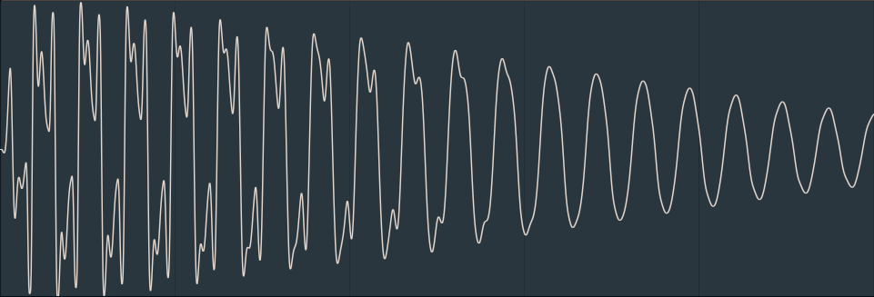

Lydsignalet fra et analogt lydopptak er endringer i spenning over tid. Vi kan framstille lydsignalet grafisk ved å sette tiden langs x-aksen og spenningen langs y-aksen. Når lyden prosesseres, vil datamaskinen sette punkter jevnt utover x-aksen og måle spenningen fra y-aksen for hvert punkt. Hvor mange punkter som settes inn avgjør kvaliteten på lydopptaket.
Hvor ofte hvert punkt settes kalles for samplefrekvensen, som vi kan tenke oss er nøyaktigheten av x-verdiene. Hvor mange punkter det er langs y-asken oppgir vi i bit. Standard samplingsfrekvens er på 44,1 kHz som er 44 100 målinger per sekund.
